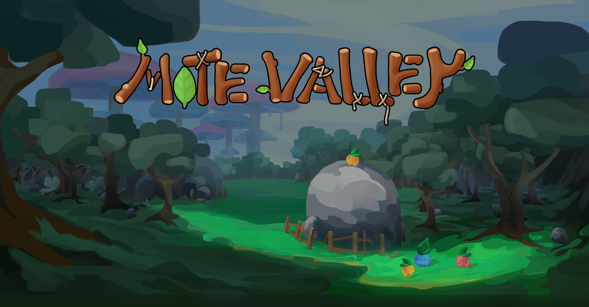
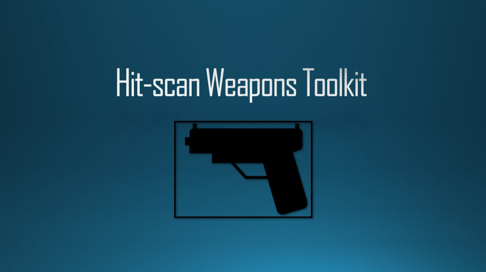

My name is
Jakub Bas
and I'm a games programmer with a First Class Bachelor's in Games Design and Programming
and a First Class Master's in Computer Science, both from Staffordshire University.
I specialize in gameplay programming, with experience using Unity (C#) and Unreal Engine (Blueprints & C++)
across a wide range of projects. I have experience of both working in and leading teams, as well as multiple aspects of games design.
I'm currently looking for opportunities in games programming, where I can contribute to projects and expand my knowledge as a developer.
I'm currently looking for opportunities in games programming, where I can contribute to projects and expand my knowledge as a developer.
Projects
Below is my main project list. To see the rest of my projects, have a look at the side-projects.

Mote Valley
Mote Valley is a farm-life sim developed in Unreal Engine 4, where you collect and evolve adorable blob creatures to defend the land against an encroaching darkness. Inspired by Slime Rancher, it blends a cozy creature management game with exploration elements.
I was one of two core programmers on the team, primarily responsible for creature AI and all blob-related systems. Handling their behaviours, evolution mechanics, iteractions with the environment and the player, etc. I also worked on implementing a large part of the main game loop, combining the different gameplay features together to form a cohesive game.
In addition to my main responsibilities, I also contributed with a wide range of quality-of-life features such as a saveable journal system that followed you throughout the game, a minimap, and extensive bug-fixes across the project. This game was created in a team of 10 people. We only had three programmers, one of which often focused on non-programming related tasks, and as such a large portion of the technical development was shared between myself and another developer, requiring close collaboration when working on the core systems.
This project is a 2D AI simulation sandbox built from the ground up in C++ using the SFML 3.0 library. My primary goal was to deepen and sharpen my C++ programming skills while exploring a long-held passion for artificial intelligence, in this case specifically working with steering behaviours. The sandbox is designed as a flexible platform to create and observe how complex dynamics or simulations can emerge from very simple sets of basic rules.
The foundation of the simulation is built on those complex dynamics created by simple mechanics, which is called emergent behaviour. The coordinated flocking seen in the videos is not actually a complex calculation, but the result of each agent independently following three simple rules: Separation (don't get too close to neighbors), Alignment (steer in the same average direction as neighbors), and Cohesion (steer towards the average position of neighbors). Then you add on Evade and Pursuit, which are both behaviours that try to catch/avoid a target by calculating their position and current momentum, and it leads to a simple but dynamic chase.
The sandbox nature of the project required some sort of real-time interaction. I created a quick tool-kit that allowed me to interact with the world in many ways, such as spawning different agents or obstacles, triggering global booleans like agent trails or debug-lines, etc. By spawning individual agents into the world, you can see how they organically form a cohesive flock from a state of chaos. The moment a predator is introduced, the flock's priority instantly shifts from cohesion to survival, causing it to scatter and reform in a believable way.
Every steering behaviour's force is multiplied by their weight, and then added together into a total force. This makes it so low-priority behaviours such as Wander can be active when there is nothing pressing going on, but will have very little effect even while still enabled during a pursuit or evade.
To create more variety and complexity, I implemented a data-driven archetype system. Instead of writing new code for each agent type, I defined their unique "personalities" in a central data file. This allows for the rapid creation of diverse agents—such as the fast but nervous Skittish prey, the herd-minded Follower, or a slow-moving Bulky agent.
Even this very basic system creates an interesting dynamic, where the fast prey doesn't bother flocking and is harder to catch, the slow bulky prey which is an easy target but often surrounded by many followers who constantly flock to anything they can.
Beyond the classic predator-prey simulation, I developed other gamemodes to explore different applications of steering behaviors. The Sculptor mode features a constant "river" of agents flowing across the screen. The user's mouse emits a repulsive Flee force, allowing them to interactively sculpt the flow of the river, with agent trails creating a fluid visual effect.
The modularity of the system allows for different visual styles with ease. Disabling the trails not only massively increases performance, but also transforms the 'fluid-like' river into a particle-flow simulation.
When I first started learning about Steering Behaviours, the first thing I thought of is some sort of space system. Without any gravity or drag acting on the agents, steering behaviours like Seek can be made to create a basic 'orbit.'
In the case below, the high intial velocity of the planet as well as its entry angle causes it to use the gravitational-like seek pull to slingshot itself out of the pull-radius. You can also see the debug lines for the forces acting on the agent.
A stable orbit can be achieved too, as long as the force of the seek behaviour acting on the agent is strong enough, but not so strong that it just pulls the planet into the star. As the planet gets closer to the star, the stronger the pull on it gets, which makes it sling past it and avoid collision, before being pulled back in over and over.
Burgler King is a chaotic fast-paced 1-4 player top-down party game developed in Unreal Engine, where players compete with each other as burglars to steal valuable loot while sabotaging each other's progress and avoiding various guards and traps throughout the levels. Victory goes to the burglar with the highest haul.
I served as both the tech and project lead on a team of 18 people, overseeing the technical direction while coordinating the programming, art and design teams. My primary focus was the core gameplay programming, everything ranging from player movement to item interactions and co-op systems and UI. Excluding only the AI and a handful of trap mechanics, the main part of the game was my responsibilty. With two junior programmers who were new to Unreal, I took on a mentorship role, creating custom tutorials and documentation to onboard them and streamline the collaboration with both them as well as the design department who often had to help in-engine.
This project ended up being a very good crash course for leadership, remote coordination, and problem-solving under a pressure of an approaching deadline. Many team members worked remotely from other cities, so we were forced to adapt quickly, learning to communicate and document effectively to keep the team aligned despite the experience gaps. It was an extremely challenging and stressful experience, however it taught me a lot about collaboration with other departments while leading the smaller team of 3 techs.
For my Master's dissertation in Computer Science, I developed a system in Unity for personality-driven procedural walk cycles. My goal and aim was to generate a walk animation that reflected different personalities using the OCEAN model. This was done by modifying a base walk cycle procedurally, prioritising keeping the project both performant and accessible, relying on Unity's built in IK system instead of a third-party or custom solution.
This project pushed me far past my comfort zone, requiring deep dives into fields of animation principles, inverse kinematics, and psychological research on how personality manfiests during locomotion. I built a system can could apply real-time personality traits to a character walk-cycle by changing 5 OCEAN weights, such as Openness or Extraversion.
Despite my limited background in animation and psychology, I managed to successfully complete the project and push past the very steep learning curve. Due to the limitations of both the scope of the project and within the Unity IK system the final product wasn't perfect and janky in some aspects, but it worked well enough to showcase the idea. I was awarded a First Class degree for this project, and it helped to broaden my technical knowledge.
Software Used
Unity
C#

Advanced Hitscan Weapons Toolkit
For my Final Year Project in my Bachelor's degree in Computer Games Design and Programming, I developed a Hitscan Weapons Toolkit in Unity, aimed at allowing designers tobuilt a wide variety of weapon types with minimal to no coding required. The toolkit was designed around flexibility and usability, with every feature that might be necessary exposed and customizable through ScriptableObjects, making it easy to plug in and use.
The system supports a wide range of weapon behaviours, including configurable fire modes (single, burst, automatic), recoil patterns (random or per-bullet), trigger types, realistic magazine handling, penetration, shotgun-style pellets, along with many more features. Despite its complexity the toolkit is very modular, documented and structured to be easily extendable, to allow users to add custom functionality without needing to refactor any old code.
This project taught me a lot about tools programming, and the importance of desgining for a user rather than a player. I scripted my own custom inspector features that did many things such as hiding or disabling irrelevant fields to avoid clutter and confusion, while focusing on accessibility and clarity. It was a deep-dive into scalable systems design and user-focused UX in Unity, which earned me a First Degree for this project.